扉页
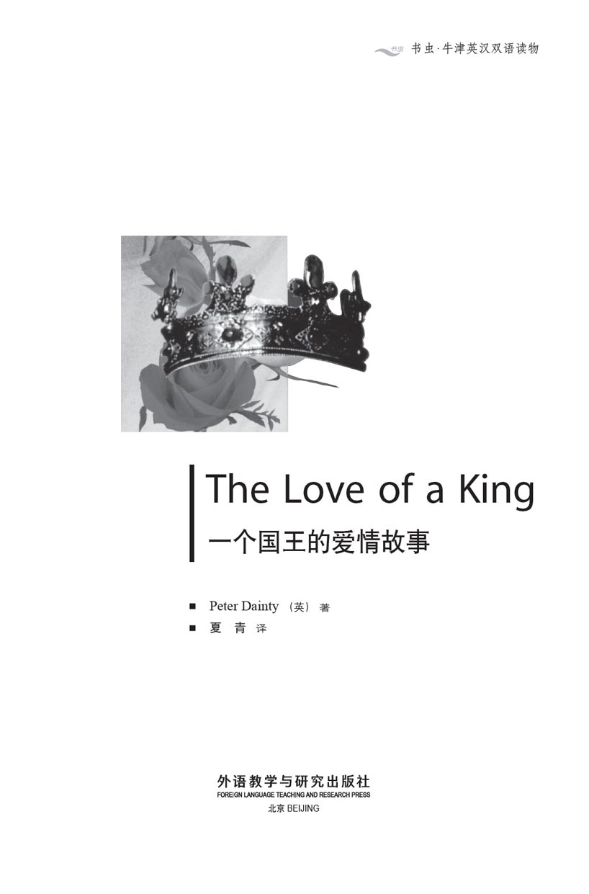
版权页
京权图字01-97-0331
Originally published by Oxford University Press, Great Clarendon Street, Oxford. © 1989
This edition is licensed for sale in the People's Republic of China only and not for export therefrom.
'Oxford' is a registered trademark of Oxford University Press.
只限中华人民共和国境内销售，不包括香港特别行政区、澳门特别行政区及台湾省。不得出口。
图书在版编目（CIP）数据
一个国王的爱情故事：英汉对照／（英）戴恩蒂（Dainty, P.）著；夏青译．—北京：外语教学与研究出版社，1998.11（2013.9 重印）
（书虫·牛津英汉双语读物）
书名原文：The Love of a King
ISBN 978-7-5600-1455-5
Ⅰ．一… Ⅱ．①戴…②夏… Ⅲ．小说，英国—对照读物—英、汉 Ⅳ．H319.4：I
中国版本图书馆CIP数据核字（1998）第16564号
出版人： 蔡剑峰
责任编辑：余 军
封面设计：李 萌
出版发行：外语教学与研究出版社
社 址：北京市西三环北路19号（100089）
网 址：http://www.fltrp.com
版 次：1998年11月第1版
书 号：ISBN 978-7-5600-1455-5
* * *
制售盗版必究 举报查实奖励
版权保护举报电话：（010）88817519
简介
简 介
你想当国王、想拥有荣华富贵、名闻天下吗？你希望无论走到哪里都成为众人的中心吗？你希望自己每时每刻、每一天都是人们关注的对象吗？
国王永远不会独自一人。每时每刻总有人注视着他——有时是他的保镖，有时是街上成千的民众。他永远不会独自一人；每个人都认识他的面孔。他做事必须检点，因为他的所做所为是无法保密的。
国王今天说了什么，明天全世界的人都会知道。他说话得谨慎；因为总有人在听。
这可不像一般的工作那样，5点钟就可以下班。国王没有假期。国王永远是国王——每时每刻都是国王。
国王永远不会独自一人，但他总是感到孤独。谁会是国王的朋友呢？谁会与他共同分担那份孤独呢？
作者彼德·戴恩蒂从事英语教学多年，目前在伦敦工作。
目录
A Family Tree
A Family Tree
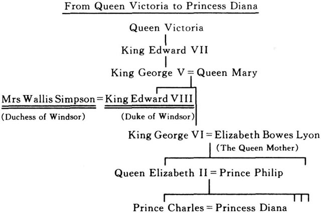
家族世系图
家族世系图

The Duke and Duchess of Windsor
The Duke and Duchess of Windsor
1894
Edward is born in Richmond, England.
1896
Wallis is born in Baltimore, USA.
1911
Edward becomes Prince of Wales.
1912
Edward enters Oxford University.
1914
The First World War begins. Edward sees fighting on the front line in Belgium.
1916
Wallis marries Winfield Spencer.
1920
Edward begins a five-year journey round the world. He visits 45 countries and travels 240000 kilometres.
1927
Wallis divorces Winfield Spencer.
1928
Wallis marries Ernest Simpson.
1930
Edward meets Wallis at a weekend house party.
1936
January King George Ⅴ dies. Edward is now King.
June Edward tells his mother that he wants to marry Wallis.
December Edward gives the crown to his brother and leaves England.
1937
Edward and Wallis marry in France. They take the name Duke and Duchess of Windsor. None of the Royal Family come to the wedding. For the next thirty years the Duke and Duchess live outside England.
1966
Queen Elizabeth Ⅱ meets the Duke and Duchess at a small party in London. 'It's time to forget the past,' she says.
1972
Edward dies in Paris. His body is buried in England at Windsor Castle.
1986
Wallis dies in Paris and is buried next to Edward at Windsor.
Duke n. 公爵。
Duchess n. 公爵夫人。
front line a line on which fighting takes place in time of war. 前线，战地。
journey n. a trip of some distance. 旅行。
crown n. the rank of king or queen 王位。
royal adj. for, belonging to, or Connected with a king or queen 王室的，皇家的。
castle n. 城堡。
温莎公爵和夫人
温莎公爵和夫人
1894
爱德华出生在英国的里士满。
1896
沃利斯出生在美国巴尔的摩。
1911
爱德华成为威尔士亲王。
1912
爱德华进入牛津大学。
1914
第一次世界大战爆发。爱德华在比利时前线督战。
1916
沃利斯与温菲尔德·斯潘塞结婚。
1920
爱德华开始了为期5年的环球旅行。他访问了45个国家，行程达24万公里。
1927
沃利斯与温菲尔德·斯潘塞离婚。
1928
沃利斯与欧内斯特·辛普森结婚。
1930
爱德华在一个周末家庭招待会上与沃利斯相识。
1936
1月：国王乔治五世逝世。爱德华登基。
6月：爱德华告诉母亲，他要与沃利斯结婚。
12月：爱德华将王位让给弟弟，然后离开英国。
1937
爱德华和沃利斯在法国结婚。他们被封为温莎公爵和夫人。皇族中没有人去参加他们的婚礼。在以后的30年里，公爵和夫人一直在英国以外的国家居住。
1966
女王伊丽莎白二世在伦敦的一个小型聚会上与温莎公爵和夫人相遇。她说：“现在是忘记过去的时候了。”
1972
爱德华在巴黎逝世。他的遗体埋葬在英国的温莎城堡。
1986
沃利斯在巴黎去世，葬在温莎城堡爱德华的墓旁。
IN APRIL 1987, THREE HUNDRED PEOPLE CAME TO A SMALL room in Geneva, Switzerland. There were Presidents and Kings, film stars and millionaires. They came from the four corners of the world, east and west, north and south, and they spoke many languages.
But they all wanted one thing — to buy some jewellery. It was the jewellery that a man called Edward gave a woman called Wallis.
One woman, Mrs Namiki from Japan, paid $105000 for a gold ring.
'Why did you pay all that money?' a friend asked. 'You can buy a gold ring in Tokyo for half that money.'
'Because Wallis and Edward were special to me,' Mrs Namiki replied. 'I never met them but I'll keep that ring all my life.'
In the next few hours, in that small room in Geneva, the jewellery was sold for $50000000. But who was Wallis? And who was Edward? And why was their love story so special?
Let's begin at the beginning...
Geneva 日内瓦。
Switzerland 瑞士
film star 电影明星。
millionaire n. a very rich man. 大富豪；百万富翁。
the four corners of the world 世界各地。
jewellery n. 珠宝。
special adj. not common or usual. 特别的；特殊的。
1987年4月，300人来到瑞士日内瓦的一间小屋子。他们当中有总统和国王，影星和百万富翁。他们来自世界各地，天南地北，操着各种语言。
但他们来的目的只有一个——买珠宝。这些珠宝是一位名叫爱德华的男人送给一位名叫沃利斯的女士的。
有一位从日本来的并木夫人，出价105000美元买了一枚金戒。
“你为什么花那么多钱？”一位朋友问，“在东京，有这一半的钱就能买一枚金戒。”
并木夫人答道：“因为沃利斯和爱德华对我有特殊的意义，我从未结识过他们，但这枚戒指我将终生珍藏。”
在随后的几个小时内，这些珠宝在日内瓦的那间小屋子里被拍卖，总额为5000万美元。但是，沃利斯是谁？爱德华又是谁呢？他们的爱情故事为什么那么特别？
让我们从头说起……
1 A Lonely Child
1
A Lonely Child
Prince Edward was born in 1894. His father, King George Ⅴ, was a tall, cold man who did not like children. 'Why does Edward talk all the time?' he once said. 'He's a very noisy child!'
His mother, Queen Mary, agreed. 'It doesn't matter if Edward is happy or unhappy,' she said. 'A child must be silent and strong.'
The family lived in Buckingham Palace, which had 600 rooms. There were 8 kitchens, 19 bathrooms, 24 toilets, 11 dining rooms, 17 bedrooms and 21 sitting rooms.
Edward once told a story about the house:
Buckingham Palace was very big, and people sometimes got lost. One night my mother, my father and I were sitting in the dining room. We were waiting for our dinner. We waited and we waited, but the food did not come. After twenty minutes my father was very angry. He stood up and went to the kitchen. 'Where is the cook?' he shouted, 'and where is my food?'
'But, Sir, 'the cook replied, 'your dinner left the kitchen fifteen minutes ago. Hasn't it arrived yet?'
'No, it hasn't,' my father shouted, 'and I'm hungry.'
The King left the kitchen and began to look for the food. Ten minutes later he saw a woman who was carrying three plates of meal and potatoes. 'What happened to you?' my father said. 'Why didn't you bring us our dinner?'
'I'm sorry, Sir,' the woman replied. 'There are a lot of dining rooms. I couldn't remember where to go. But if you return to the table, Sir, this time I can follow you to the right room.'
Edward did not go to school with other children. He stayed in Buckingham Palace where he had a special classroom just for him.
This is how Edward described his lessons:
My teacher, Mr Hansell, was a thin man. He never smiled and his nose was very red. We had lots of books but they were all very boring. They were full of words and they didn't have any pictures.
Sometimes I stopped reading and looked out of the window. Mr Hansell got very angry. He took a stick and hit me on the arm. 'Don't look out of the window, little boy,' he shouted. 'Look at the book.' He hit me many times and, my arm was red.
Every Friday the teacher took me to my father's room. 'And what has my son learnt this week, Mr Hansell?' the King asked.
And the answer was always: 'Not very much I'm afraid, Sir. Edward doesn't like his lessons. He never listens to what I say.'
When Mr Hansell left the room, my father was angry with me. 'What's wrong with you, child?' he said. 'Are you stupid? Why can't you learn anything?'
'But the lessons are so boring, Sir,' I replied. 'And Mr Hansell hits me.'
'I don't understand you, Edward. You're a baby. You're so weak. You'll never be a good King. A King must be strong. Go to your room and stay there until the morning.'
'I spent many days alone in my room,' Edward wrote later. 'I never played with other children and I didn't have any friends. I lived in the most beautiful house in England but I was always lonely and sad. I saw my mother once a day at dinner time and I saw my father three or four times a week, but they never gave me any love. I was afraid of them and everything I did was wrong.'
agree v. have the same opinion. 同意，答应。
kitchen n. a room in which meals are cooked. 厨房。
bathroom n. a room with a bathtub. 浴室。
toilet n. 洗手间，厕所。
sitting room 起居室。
lost adj. unable to find the way. 迷路的。
cook n. a person who prepares food. 厨师。
follow v. come or go after. 跟着。
just adv. only 仅，只。
describe v. give a picture in words. 描述。
boring adj. being dull. 令人厌烦的，无聊的。
be full of 充满。
stick n. 棍，棒。
hit sb. on the arm 打某人的胳膊。
be angry with sb. 生某人的气。
understand v. know the meaning of (sth). 懂，了解，知道。
baby n. a person who behaves like a very young child. 有孩子气的人。
weak adj. 懦弱的。
until prep. 直到。
alone adj. without others. 单独，独自。
lonely adj. unhappy because of being alone or without friends. 寂寞的。
once a day 每天一次。
1 一个孤独的孩子
1 一个孤独的孩子
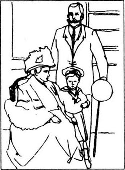
爱德华王子出生于1894年。他的父亲乔治五世国王身材高大，性情冷漠。他不喜欢孩子。“爱德华为什么总是说个不停？”有一次，他说，“这孩子真闹人！”
他的母亲玛丽王后也这么想。“爱德华高兴与否并不重要，”她说，“小孩子一定要沉静而坚强。”
他们一家住在白金汉宫。这座宫殿有600个房间，其中有8个厨房，19间浴室，24个卫生间，11个餐厅，17间卧室和21间起居室。
有一次，爱德华讲了一个关于这座房子的故事：
白金汉宫非常大，人们有时会迷路。一天晚上，我和我的父母亲坐在餐厅里等着吃晚饭。我们等呀等呀，但饭菜迟迟没有送上来。等了20分钟，我父亲火了。他起身去厨房。“厨师呢？”他喊道，“我的晚餐在哪儿？”
“可是，陛下，”厨师说，“您的晚餐15分钟之前就送走了。难道还没有送到吗？”
“没有，”我父亲高声叫道，“我饿坏了。”
国王离开厨房，开始去找晚餐。10分钟后，他看见一个女佣正端着3盘子肉和土豆。“你是怎么回事？”我父亲问，“你为什么不把晚餐给我们端来？”
“对不起，陛下，”女佣回答道，“这儿有很多餐厅。我记不起应该进哪一间，但要是您能回到餐桌旁去，陛下，这次我会跟着您找到该去的餐厅。”
爱德华没有和其他孩子一起去学校上学。他待在白金汉宫，那儿有他的专用教室。
爱德华这样形容他的课程：
我的老师汉塞尔先生人很瘦、他从来不笑，鼻子红红的．我们有很多书，但都枯燥乏味。书里全是字，一幅画儿也没有。
有时读着读着我会停下来，往窗外看。汉塞尔先生非常生气。他拿起一根小棒儿打我的胳膊。“别往窗外看，小男孩，”他叫道，“看书．”他一下又一下地打我，打得我胳膊都红了。
每到星期五，老师都把我带到父亲的房间里。
“汉塞尔先生，这个星期我的儿子学了些什么？”国王问。
回答总是这样的：“恐怕没学多少，陛下。爱德华不喜欢上课。我讲什么他从来不听。”
汉塞尔退出房间后，我父亲便对我发火。“孩子，你怎么了？”他说，“你是不是脑子笨？你为什么学不会任何东西？”
“可是那些课程太没意思了，陛下，”我回答，“汉塞尔先生还打我。”
“我弄不懂你，爱德华。你真是长不大。你是个软骨头。你永远当不了一个出色的国王。国王必须坚强。回你的房间去，明天早晨以前不许出来。”
“许多个日子我都是独自一人在自己房间里度过的，”爱德华后来写道，“我从未和其他孩子一起玩过，我也没有朋友。我住在英国最漂亮的房子里，却总是感到寂寞、悲伤。我每天只是在吃饭的时候才见我母亲一面，父亲每星期见三四面，但他们从不给我爱。我害怕他们，在他们看来，我做的每件事都不对。”
2 The Prince of Wales
2
The Prince of Wales
In the spring of 1911 King George called Edward into his room and said:
'Next month I'll make you Prince of Wales and these are your clothes for the ceremony.'
The King opened a small cupboard and Edward started to cry. 'But father,' he said, 'I'm sixteen years old now. I can't wear soft shoes and a skirt. I'll look like a girl. Why can't I dress like other people?'
'Because you're different and special,' his father replied, 'and one day you'll be King.'
Edward cried for the next two days, but there was nothing he could do.
And so, on 10th June 1911, the family drove to Caernarvon Castle in North Wales and the ceremony began.
The King put a small gold crown on Edward's head. There was music and dancing and the crowd began to shout.
The new Prince of Wales closed his eyes. 'I feel terrible,' he said. 'Can we go home now?'
'Not yet,' the King replied. 'The people want to see you.'
Edward walked to the front of the castle and looked down at the crowd. He was shaking and his face was red.
'Smile, Edward,' the King said. 'You are happy!'
A few hours later the family were driving back to Windsor. 'Wasn't that a lovely day!' Queen Mary said.
Edward took off his shoes and looked out of the window. 'Never again,' he thought. 'Never again!'
ceremony n. 仪式。
cupboard n. 柜子，橱柜。
dress v. put clothes on (oneself or sb. else). 穿衣服。
crown n. 王冠。
crowd n. a large number of people gathered together. 群众，人群。
shake v. move quickly up and down and to and fro. 抖动。
lovely adj. very pleasant 愉快的。
take off 脱掉。
never adv. not at any time. 决不。
2 威尔士亲王
2 威尔士亲王
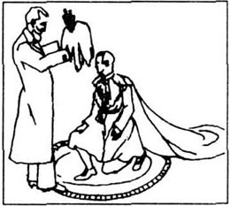
1911年春天，乔治国王把爱德华叫到自己的房间，说：
“下个月我要封你为威尔士亲王，这是你要在典礼上穿的衣服。”
国王打开一个小柜子，爱德华哭了起来。“可是父亲，”他说，“我现在已经16岁了。我不能穿软鞋和裙子。那会使我看上去像个女孩子。为什么我不能穿得像其他人一样？”
“因为你和他们不一样，你是特别的，”他的父亲回答，“有朝一日你会成为国王，”
接下来的两天，爱德华哭个不停，但他没有办法。
就这样，1911年6月10日，王室成员驱车前往北威尔士的卡那封城堡，典礼开始了。
国王把一顶小号的金冠戴在爱德华的头上。现场有音乐和舞蹈，人群欢呼起来。
而新封的威尔士亲王却闭上了眼睛。“我觉得很难受，”他说，“现在我们可以回家了吗？”
“还不能，”国王回答，“人们想看看你。”
爱德华走到城堡前部，俯视人群。他浑身颤抖，脸涨得通红。
“笑一笑，爱德华，”国王说，“你应该高兴！”
几小时后，全家人驱车回到温莎。“多么愉快的一天呀！”玛丽王后说。
爱德华脱下鞋子，向窗外望去。“我再也不要这样了，”他想，“永远不！”
3 The Royal Star
3
The Royal Star
After a year at Oxford University, Edward went to fight in the First World War. He wrote:
I lived in a house with twenty-five other soldiers. At night we talked about our lives and our families. It was very interesting.
I could speak freely to different people—rich and poor, young and old. But I also saw the blood and noise of war.
One day in 1916 my driver took me to the town of Loos in Belgium. I got out of the car and walked to the top of the hill. Down below me there was heavy fighting and I felt very sad.
An hour later I returned to my car. I'll never forget what I saw. My driver was dead. While I was away, somebody shot him in the neck.
When the war finished in 1918, Edward returned to Buckingham Palace. One night he was talking to his father in the dining room.
'I don't understand why countries fight,' the Prince said. 'The war has finished, but nothing has changed. There are still millions of poor and hungry people. It's not right. Somebody must do something!'
'Well,' King George replied, 'you can't change the world if you sit by the fire. You must travel. Meet people. Talk to them. Listen to what they say. And then, when you are King, you can make the world a better place.'
And so, in 1920, Edward left England again. During the next five years he travelled 240000 kilometres and visited 45 different countries.
He saw India, Argentina, Nigeria, Mexico, New Zealand, Germany, and Japan. When he came to Toronto, in Canada, there were 500000 people in the streets to meet him. Everywhere thousands of people waited to see him — there were crowds of 190000 in Cape Town, 300000 in Paris, 500000 in New York, and 750000 in Melbourne.
'Edward is the first royal star,' one newspaper wrote, 'and he is now the most famous man in the world. In the old days princes were cold and bored. But Edward is different. He gets out of his car and walks down the street. Every two or three minutes he stops and speaks with the crowd. He laughs. He smiles. He shakes a thousand hands. He is a man of the people with a heart of gold.'
Oxford University 牛津大学。
interesting adj. holding the attention 有意思的，令人发生兴趣的。
freely adv. openly. 坦诚地，率直地。
heavy adj. 激烈的。
away adv. from this or that place. 离开。
shoot sb. in the neck 打中某人的脖子。
millions of 许许多多，无数。
travel v. go from place to place. 旅行，游历。
India 印度。
Argentina 阿根廷。
Nigeria 尼日利亚。
Mexico 墨西哥。
New Zealand 新西兰。
bored adj. tired or uninterested. 厌烦的。
3 皇族明星
3 皇族明星
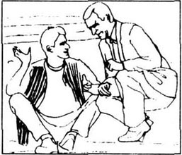
在牛津大学学习了一年之后，爱德华参加了第一次世界大战。他写道：
我和其他25名士兵住在一间房子里。晚上，我们就谈各自的生活和家庭。谈话十分有趣。
我可以和各种各样的人随意交谈——无论是富人还是穷人，年轻人还是老年人。但我也领略了战争的血腥和喧嚣。
1916年的一天，我的司机送我去比利时的卢斯镇。我下了车，往山顶走去。山下正进行着激烈的战斗，我心里十分难过。
一小时后，我回到汽车上。我永远也忘不了我看到的那一幕。我的司机死了。我离开的时候，有人射中了他的颈部。
1918年战争结束后，爱德华回到白金汉宫。一天晚上，他在餐厅里同父亲交谈。
“我不明白国家之间为什么要打仗，”王子说，“战争已经结束了，但一切依旧。还是有许许多多的人生活在贫困中，忍饥挨饿。这不公平。总得有人做些什么！”
“嗯，”乔治国王答道，“光坐在壁炉旁是不能改变世界的。你得出去走走。去和人们结识一下，与他们谈一谈，听听他们说些什么。这样，当你成为国王的时候，就可以把世界变得更美好。”
于是，1920年，爱德华再次离开英国。在随后的5年里，他行程达24万公里，访问了45个国家。
他访问了印度、阿根廷、尼日利亚、墨西哥、新西兰、德国和日本。当他到达加拿大多伦多时，受到50万人的夹道欢迎。每到一处，都有成千上万的人盼着一睹他的风采——在开普敦有19万人，在巴黎有30万人，在纽约有50万人，在墨尔本有75万人。
“爱德华是第一位皇族明星，”一家报纸这样写道，“他是目前全世界最有名的人。以前的王子都态度冷漠而厌烦。但爱德华不同。他从汽车里出来，在街上走。每隔两三分钟，他就停下来和人们交谈。他有时开怀大笑，有时面带微笑。他和上千人握手。他平易近人，有颗金子般的心。”
4 The Meeting
4
The Meeting
In the autumn of 1930 Edward went to stay with his friends Lord and Lady Furness. This is how he described that weekend in a book called A King's Story:
On Saturday the weather was cold and windy. It was raining heavily so we could not ride our horses. We decided to stay in the house and have an early lunch with some of Lady Furness' friends.
At one o'clock Wallis arrived with her husband. She was beautifully dressed and she smiled all the time. She spoke with Lord Furness for a few minutes, and then Lady Furness brought her over to see me.
'Sir, I would like you to meet one of my dearest and sweetest American friends, Mrs Wallis Simpson.'
'How do you do, Mrs Simpson,' I said. 'Please come and sit down.'
Lady Furness left us and we began to talk.
I could see that Wallis was not feeling very well. She had a bad cold and her eyes were red. 'I'm afraid that our English houses aren't very warm,' I said. 'We don't have American central heating here.'
There was a long silence. Mrs Simpson turned her face and looked out of the window. Then she said: 'You have disappointed me, Sir.'
'And why is that?' I asked.
'Because everybody asks me about American central heating. I thought that the Prince of Wales would talk about something more interesting.'
I began to laugh.
'What's the matter, Sir?' Wallis asked. 'Have I said something wrong?'
'No,' I replied. 'I'm laughing because you didn't lie to me. You told me the truth.'
'But why is that funny? Doesn't everybody do that?'
'One day I'll be King of England,' I replied. 'And people are afraid of me. If I say that the sky is yellow, they say, "Yes, Sir, you are right". If I say that Wednesday is the first day of the week, they say, "Yes, Sir, you are right". And if I say that Scotland is bigger than Canada, they say, "Yes, Sir, you are right". But you told me that I was boring! You told me the truth. I like that!'
There was another silence and then Wallis began to laugh. 'Can I say one more thing, Sir?'
'Yes, Mrs Simpson, what is it?'
'It's your trousers, Sir.'
'My trousers?'
'Yes, Sir. They are black and your shoes are brown.' These two colours don't look right together.
I stood up and looked in the mirror. 'Yes, Mrs Simpson, you're right. I look very strange. The next time we meet, I will be better dressed.'
When lunch was ready, we walked through into the dining room. I sat at one end of the table and Wallis sat at the other end. I was watching her very carefully. I thought how beautiful her hands were. She began talking to Lady Furness and then, a few minutes later, she turned and smiled at me. I fell very happy.
After lunch Wallis came over to say goodbye. 'My husband and I have to leave now, Sir. We're going to another Party in London.'
I wanted to speak to her but I could not find the right words. I don't know why. We shook hands and Wallis walked away.
I went into the next room and sat down near Lady Furness. 'Tell me about Mrs Simpson,' I said.
'What would you like to know?' she asked.
'Everything!' I said.
'Then perhaps, Sir, you would like to walk in the garden. We can talk more freely there.'
We stood up and left the house by the back door. We walked slowly through the trees, and Lady Furness told me about Wallis...
weekend n. the end of a week. 周末。
windy adj. 风大的。
all the time 一直，始终。
sweet adj. lovable. 可爱的，迷人的。
have a bad cold 患了严重的感冒。
central heating 中央供暖系统。
silence n. the state of not speaking or making a noise. 缄默，无言。
disappoint v. fail to fulfill the hopes of (a person). 使……失望。
laugh v. 笑。
lie v. say sth. that one knows to be untrue 撒谎。
truth n. the true facts 实话，事实。
funny adj. causing laughter. 有趣的，可笑的。
Scotland 苏格兰。
Canada 加拿大
right adj. 适当的，恰到好处的。
mirror n. 镜子。
strange adj. 奇怪的。
carefully adv. 专注地，用心地。
say goodbye 告别。
shake hands 握手。
by prep. through. 经，由。
through prep. 穿过。
4 相识
4 相识
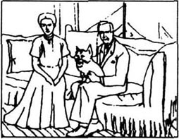
1930年的秋天，爱德华去他的朋友弗内斯勋爵夫妇那里小住。在《一个国王的故事》一书中，他是这样描述那个周末的：
星期六，天气很冷，刮着风。雨下得很大，所以我们无法出去骑马。我们决定待在屋里，早点开午饭。与我们共进午餐的是弗内斯勋爵夫人的一些朋友。
1点钟，沃利斯和她的丈夫来了。她穿得很漂亮，始终面带微笑。她与弗内斯勋爵谈了几分钟，然后弗内斯勋爵夫人把她带到我面前。
“殿下，我想介绍您认识我的一位最可爱、最甜美的美国朋友，沃利斯·辛普森夫人。”
“您好，辛普森夫人，”我说，“请过来坐坐。”
弗内斯勋爵夫人走开了，我们交谈起来。
我看得出，沃利斯不太舒服。她得了重感冒，眼睛红红的。“恐怕我们英国的房子不够暖和，”我说，“我们这儿没有美国的中央供暖系统。”
接着是长长的一段沉默。辛普森夫人转头向窗外望去。然后她说：“您让我感到失望，殿下。”
“为什么？”我问。
“因为每个人都问我美国中央供暖的事儿。我想，威尔士亲王准会谈些比较有趣的事。”
我大笑起来。
“怎么了，殿下？”沃利斯问，“我说错什么了吗？”
“没有，”我回答，“我笑是因为你没对我说谎。你讲了真话。”
“可这有什么可笑的？难道大家不都这样吗？”
“有朝一日我会成为英国的国王，”我答道，“所以人们都怕我。如果我说天是黄的，他们会说，‘对，殿下，您说得对。’如果我说星期三是一周里的第一天，他们会说，‘对，殿下，您说得对。’如果我说苏格兰比加拿大还要大，他们会说，‘对，殿下，你说得对。’可是，您却告诉我，我令人乏味！您讲了真心话。我喜欢这样！”
又是一阵沉默，然后沃利斯笑了起来。“我能再说一件事吗，殿下？”
“可以，辛普森夫人，什么事？”
“是您的裤子，殿下。”
“我的裤子？”
“是的，殿下。您的裤子是黑色的，鞋却是棕色的。这两种颜色配在一起有点儿不协调。”
我站起身，照了照镜子。“不错，辛普森夫人，您说得对。我看上去真奇怪，等我们下次见面时，我会穿得更得体些。”
午餐准备好了，我们走进餐厅。我坐在桌子一头，沃利斯坐在另一头。我仔细地打量她。我想，她的手多美呀！她开始和弗内斯勋爵夫人谈话，几分钟后，她转过头来向我微笑。我觉得很高兴。
午餐后，沃利斯过来向我道别。“我和我丈夫现在得走了，殿下。我们要去伦敦参加另一个聚会。”
我想对她说点什么，可一时找不到合适的话。我不懂为什么会这样。我们握了握手，沃利斯走了。
我走到隔壁房间里，坐在弗内斯勋爵夫人身旁。“给我讲讲辛普森夫人的事。”我说。
“您想知道什么？”她问。
“她的一切！”我说。
“那样的话，殿下，也许您会愿意去花园里走走。我们在那儿谈起来会比较自由些。”
我们起身从后门走出去。我们漫步在树丛中，弗内斯勋爵夫人给我讲起了沃利斯的事……
5 Wallis
5
Wallis
This is how Lady Furness described Mrs Simpson's early life to Edward:
Wallis was born in Baltimore. She never knew her father. He died when she was five months old. But her mother was a strong and loving woman, and Wallis was a happy child.
When she was twenty, she married a man called Winfield Spencer. For the first few years they were happy together. But one day Winfield lost some money in the street. He was very angry. When he came home, he took a bottle of whisky from a cupboard and began to drink.
That night he hit Wallis in the mouth. She screamed and he hit her again. There was blood on her face and she was shaking like a leaf. 'Please, Winfield,' she said. 'No more.'
But Winfield took her arm and pulled her up the stairs. 'You're my prisoner,' he shouted at her, 'and you're not going to leave.' Then he pushed her into the bathroom and locked the door.
The next morning Wallis went back to her family. 'I can't stay with him,' she said. 'I want a divorce.'
'Poor Wallis,' Edward said. 'But what happened next, Lady Furness?'
'Well,' said Lady Furness, 'a few months later she met a fine man called Ernest Simpson. He's quiet, but interesting. They got married and they now live in a beautiful flat in the centre of London.'
'And are they happy?' asked Edward.
Lady Furness looked at the Prince and smiled. 'I don't know, Sir,' she said. 'I don't know.'
During the next two years the Prince saw Wallis once or twice a week. They had the same friends, and they often met at parties.
'Mrs Simpson knew a lot about life,' Edward once said. 'She loved books, food, people, and travel. She was very beautiful and her eyes were full of fire. She was friendly and easy to talk to and, after a while, I opened up my heart. We had no secrets. I told her everything. And that's how it all began.'
'His eyes were always sad,' Wallis said about Edward. 'And sometimes he looked like a child — so young, so quiet, so weak. He had no real friends. Perhaps people were a little afraid of him. But he was a warm and kind man. When he talked to me, I felt my heart jump. I wanted to be alone with him, but I knew that wasn't possible. Did the Prince love me in those early days? No, I don't think so. But each time we met, we just felt closer and closer.'
In June 1933 Edward gave a birthday party for Wallis, and during the next few months he visited the Simpson's flat in London almost every day.
One evening, the Prince asked Wallis and Ernest to go skiing in Austria. 'I'm sorry, Sir,' Mr Simpson replied. 'I have to go to America on business. But perhaps Wallis and her aunt can come with you.'
'We went to Kitzbühl as friends,' Wallis wrote later, 'but when we came home, we were in love. And a few months later the Prince asked me to marry him. It was just like a dream!'
Baltimore 巴尔的摩（美国马里兰州港市）。
loving adj. showing or expressing love. 钟爱的，充满爱的。
bottle n. 瓶子。
whisky n. 威士忌酒。
scream v. give a sharp cry because of pain or fear. 尖叫。
leaf n. 叶子。
prisoner n. 囚徒。
lock v. fasten with a lock. 锁住。
flat n. 公寓。
once n. one time. 一次。
twice n. two times. 两次。
secret n. sth. kept hidden or known only to a few. 秘密。
look like 看上去像。
possible adj. that can be done, exist or happen 可能存在或发生的。
during prep. 在……期间。
ski v. 滑雪。
go skiing 去滑雪。
go to some place on business 去某处出差。
5 沃利斯
5 沃利斯
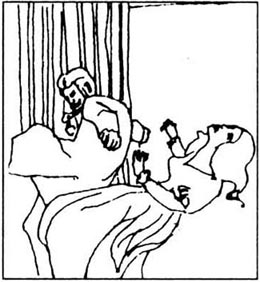
下面就是弗内斯勋爵夫人给爱德华讲述的辛普森夫人早年的生活：
沃利斯出生在巴尔的摩。她从不认识自己的父亲。她才5个月大，父亲就去世了。她母亲是个坚强而充满爱心的女人，沃利斯童年很幸福。
她20岁时与一位名叫温菲尔德·斯潘塞的人结了婚。在婚后的最初几年里，他们在一起很幸福。可有一天，温菲尔德在街上丢了钱。他很恼怒。回到家，他从柜子里拿出一瓶威士忌，喝了起来。
那天晚上，他扇了沃利斯一记耳光。她尖叫起来，他又打她。她脸上都是血，身体像一片叶子一样颤抖着。“求求你，温菲尔德，”她说，“别打了。”
但温菲尔德拽起她的一只胳膊，一直把她拖到楼上。“你是我的囚犯，”他对她吼道，“你别想走。”然后他把她推进浴室，锁上了门。
第二天早晨，沃利斯回到娘家。“我不能和他在一起生活了，”她说，“我要离婚。”
“可怜的沃利斯，”爱德华说，“可是后来呢，弗内斯勋爵夫人？”
“后来，”弗内斯勋爵夫人说，“几个月后她认识了一位叫欧内斯特·辛普森的好人。他很少说话，但很风趣。他们结了婚，现在住在伦敦市中心一套漂亮的公寓里。”
“那他们在一起快乐吗？”爱德华问。
弗内斯勋爵夫人看着王子笑了。“我不知道，殿下，”她说，“我不知道。”
在后来的两年里，王子每星期都能见到沃利斯一两次。他们有共同的朋友，所以经常能在聚会上碰面。
“辛普森夫人生活阅历丰富，”爱德华有一次说，“她爱看书，喜爱美食，关爱他人，也喜欢旅行。她非常漂亮，眼里总是充满热情。她待人友善，同她谈话很轻松，没多久我就敞开了心扉。我们之间没有秘密。我对她无所不谈。一切就是这样开始的。”
“他的眼神总是那么忧伤，”沃利斯这样描述爱德华，“有时他看起来像个孩子——那么年轻，那么温文尔雅，那么脆弱。他没有真正的朋友。也许人们有点儿怕他。但他是一个热心而善良的人，当他对我说话时，我能感觉到自己的心在跳。我想和他单独在一起，但我知道那是不可能的。王子在与我初识的那些日子里爱我吗？不，我想他不爱。但每次我们相见，都感到彼此更接近了。”
1933年6月，爱德华为沃利斯举办了一个生日聚会，在那以后的几个月中，他几乎天天都去辛普森夫妇在伦敦的公寓拜访。
一天晚上，王子邀请沃利斯和欧内斯特一起去奥地利滑雪。“对不起，殿下，”辛普森先生回答，“我得去美国出差。不过，也许沃利斯和她姨妈能和您一同去。”
“我们去基特普尔时是朋友，”沃利斯后来写道，“但返回时已经相爱了。几个月后王子便向我求婚，这真像是一场梦！”
6 The King is Dead! Long Live the King!
6
The King is Dead! Long Live the King!
In January 1936 Edward went to Windsor for a few weeks. He was tired of town life and he wanted to work in his garden and ride his horses.
But then, one afternoon, there was a phone call from Queen Mary. 'Edward,' she said, 'you must come back immediately. Your father is very ill and I think he's going to die.'
When Edward arrived, he went straight to his father's room. He walked to the side of the bed and kissed his father's white face. The King opened his eyes and smiled. Then he took his son's hand and said: 'Be a good King, Edward. And be good to your mother.'
'Yes, father, I will.'
The King closed his eyes and did not speak again. Just after midnight he died.
Then Queen Mary took Edward's hand and kissed it. 'My child, you are now King,' she said softly. 'God be with you.'
His three brothers came to him, one by one, and they each kissed his hand. 'The King is dead. Long live the King.' they said.
At one o'clock Edward left the room to telephone Wallis. 'My father is dead,' he said.
'I'm so sorry, Sir.'
'I must stay here for a while,' Edward went on. 'But I'll phone you at the weekend. Nothing will change between you and me. I love you more than ever, and you will be my Queen.'
'Let's not talk about that now,' Wallis replied. 'You must go back to your family.'
'But you are my family, Wallis. You are everything to me. Goodnight. Sleep well.'
When Wallis put the phone down that night, she suddenly felt afraid. 'Edward is now King,' she thought, 'but what will happen to me?'
be tired of no longer interested. 对……感到厌倦。
but then 然而。
a phone call 电话。
immediately adv. at once. 立刻。
straight adv. directly. 径直地。
kiss v. 吻。
midnight n. 12 o'clock at night. 午夜，子夜。
long live ... ……万岁。
go on continue without stopping. 继续。
change v. to become different. 改变，变换。
ever adv. at any time (before). 以前。
everything n. the most important thing or person. 最重要者，至宝。
suddenly adv. unexpectedly and quickly. 突然。
afraid adj. full of fear. 害怕的，畏惧的。
6 国王逝世！国王万岁！
6 国王逝世！国王万岁！
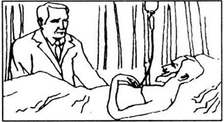
1936年1月，爱德华去温莎小住几个星期。他厌倦了城市生活，只想侍弄侍弄自己的花园，骑骑马。
然而，一天下午，王后玛丽打来电话。“爱德华，”她说，“你必须马上赶回来。你父亲病得很厉害，我想他快不行了。”
爱德华一赶到，便径直去了父亲的房间。他走到床边，吻了吻父亲苍白的脸。国王睁开眼睛，微微一笑。他拉住儿子的手，说：“做个出色的国王，爱德华。要好好待你的母亲。”
“是，父亲，我会的。”
国王闭上眼睛，再没说什么。午夜刚过，他就去世了。
玛丽王后握住爱德华的手，吻了吻。“我的孩子，现在你是国王了。”她温柔地说，“愿上帝与你同在。”
他的3个弟弟先后走过来，吻了他的手。“国王逝世了，国王万岁！”他们说。
1点钟，爱德华离开父亲的房间，去给沃利斯打电话。“我父亲去世了。”他说。
“我很难过，殿下。”
“我必须在这儿待一段时间，”爱德华接着说，“但周末我会给你打电话的。什么也不能改变你我之间的事。我比任何时候都更爱你，你将成为我的王后。”
“现在我们还是不要谈这些，”沃利斯回答，“你必须回到你的家庭里。”
“可你就是我的家庭啊，沃利斯。对我而言，你就是一切。晚安。睡个好觉。”
那天晚上，沃利斯放下电话时，突然觉得很害怕。“爱德华现在是国王了，”她想，“但我会怎样呢？”
7 The Church
7
The Church
In the spring of 1936, Mrs Simpson wrote a Letter to her husband.
'Dear Ernest,' she wrote. 'You have been very kind to me. You are a good and strong man. But I must tell you that our marriage is finished. I am in love with the King and I want a divorce. Don't be angry. There is nothing you can do. I'll never forget you, but I have to be free.'
Ernest replied immediately: 'Your letter arrived this morning. I will do what you ask, but I'll never stop loving you. And if you need me, I'll always be here.'
That night the King and Wallis met at a small restaurant in Piccadilly. Edward read Ernest's letter again and again. 'That's wonderful news,' he said. 'Nothing can stop us now!'
The next day, when Edward came down to breakfast, Gordon Lang, the Archbishop of Canterbury, was waiting for him.
'Good morning, Gordon,' the King said. 'How nice to see you again. And what can I do for you?'
For a minute the Archbishop said nothing. Then he opened a small black bag and took out three newspapers. 'I have come to see you about Mrs Wallis Simpson,' he began. 'The newspapers say that you want to marry her. Are these stories true, Sir?'
'Yes, Gordon, Wallis is going to be my wife.'
'But that's not possible,' the Archbishop replied. 'You know what the Church thinks about marriage and divorce. Divorce is wrong in the eyes of God!'
Edward smiled and then said: 'Can I ask you some questions about God, Mr Lang?'
'Yes, of course, Sir.'
'Is God happy when two people fall in love?'
'Yes, Sir, but...'
'And is God happy when two people fall in love and get married?'
'Yes, Sir, but...'
'And is God happy when two people fall in love, get married, and live happily together?'
'Yes, Sir, but...'
'Then, Archbishop, Wallis and I will make God very happy. We are in love, we'll get married, and we'll live together happily!'
'But you don't understand, Sir,' Mr Lang replied. 'The Church says that divorce is wrong. Mrs Simpson cannot leave Mr Simpson and then marry you. You must forget about her and find another woman. Please, Sir, I must ask you to think again.'
'That is not possible,' Edward said softly. 'When Wallis is free, I shall marry her.'
There was a long silence. The Archbishop looked down at the floor and shook his head. 'You're making a big mistake, Sir,' he said. 'The Church is very strong, and we will not have this woman as our Queen!'
Suddenly Edward stood up, his face red and angry. 'Thank you for coming,' he said. 'But I have nothing more to say. And I want to be alone.'
The Archbishop stood up to go, but then turned and touched the King's arm. 'Please, Sir, think again. The Church will be against you.'
'I don't care,' Edward replied. 'I have God on my side, and that is all I need. Goodbye, Mr Lang.'
church n. 教会。
finished adj. ended. 结束的。
wonderful adj. unusually good 特别好的，极好的。
breakfast n. 早饭。
Archbishop 大主教。
Canterbury 坎特伯雷。
in the eyes of sb. 在某人看来，以某人的观点。
fall in love 爱上。
get married 结婚。
forget about stop thinking about sth. or sb. 忘掉，忘却。
softly adv. not loudly, gently. 温和地。
mistake n. a wrong thought or act. 错误。
have sb. as... 允许某人成为……。
against prep. in opposition to. 反对。
be on one's side （在吵架、争执、斗争等中）站在某人一方。
7 教会
7 教会
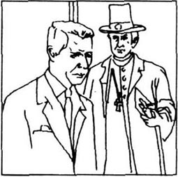
1936年春天，辛普森夫人给她丈夫写了一封信。
“亲爱的欧内斯特，”她写道，“你一直待我很好。你心地善良，性格坚强。但我不得不告诉你，我们的婚姻结束了。我爱上了国王，我想和你离婚。请不要生气。你无能为力了。我永远不会忘记你，但我必须得到自由。”
欧内斯特立刻回了信：“你的信是今早到的。我答应你的要求，但我永远不会停止对你的爱。如果你需要我，我随时都会帮忙。”
那天晚上，国王和沃利斯在皮卡迪里的一家小餐馆见了面。爱德华一遍又一遍地读欧内斯特的信。“这消息太好了，”他说，“现在没有什么能够阻碍我们了。”
第二天，爱德华下楼吃早饭的时候，发现坎特伯雷大主教戈登·朗正在等他。
“早上好，戈登，”国王说，“又见到您真好。我能为您做些什么？”
大主教沉默了片刻，然后打开一个小黑包，取出3份报纸。“我来见您是为了沃利斯·辛普森夫人的事，”他开口说，“报上说您要娶她为妻。这是真的吗，陛下？”
“是的，戈登，沃利斯将成为我的妻子。”
“但那是不可能的，”大主教说，“您知道教会对婚姻和离婚的看法。在上帝眼里，离婚是错误的！”
爱德华笑了，然后说：“我能问您一些有关上帝的问题吗，朗先生？”
“当然可以，陛下。”
“当两个人相爱时，上帝高兴吗？”
“高兴，陛下，但是……”
“两个人相爱并结婚，上帝高兴吗？”
“高兴，陛下，但是……”
“两个人相爱、结婚、在一起幸福地生活，上帝高兴吗？”
“高兴，陛下，但是……”
“那么，大主教，沃利斯和我会让上帝十分高兴的。我们相爱，我们要结婚，我们在一起生活会很幸福！”
“但您不明白，陛下，”朗先生说，“教会认为离婚是错误的。辛普森夫人不能离开辛普森先生，然后和您结婚。您必须忘记她，去找另一个女子。陛下，我请求您三思。”
“这是不可能的，”爱德华轻轻地说，“沃利斯一离婚，我就娶她。”
沉默了许久，大主教低头看着地板，摇了摇头。“您正在犯一个很大的错误，陛下，”他说，“教会是强有力的，我们不会让这个女人做我们的王后！”
爱德华刷地站起身，脸色通红，怒容满面。“谢谢您的来访，”他说，“但我没什么可说的了。我想一个人待着。”
大主教站起身要走，但又回过头来，拍拍国王的手臂。“陛下，请您再想想。教会会反对您的。”
“我不在乎，”爱德华回答，“上帝会站在我这边，除此之外我不需要别的。再见，朗先生。”
8 The Storm
8
The Storm
In July and August Wallis and the King sailed the Mediterranean. They met Prime Minister Metaxas in Greece, Kemal Ataturk in Turkey, and King Boris in Bulgaria. But that summer is famous for Edward's clothes. On the journey from Athens to Istanbul, the King took off his shirt to get brown in the sun. It was hot, and ten minutes later he was asleep. So he did not see the young photographer who was now taking pictures of the King...
When Edward returned from the Mediterranean, there was a letter waiting for him.
It was from Mr Albert Thompson of Birmingham, who wrote: 'I saw a picture of you in the newspaper this morning and I felt very angry. I have never seen a King dressed as badly as you were! No shirt! And no tie, no socks, no hat... and in short trousers! How could you, Sir?'
Edward showed this letter to Stanley Baldwin, the Prime Minister. 'What do you think of this?' the King asked.
'Mr Thompson is right, Sir,' the Prime Minister replied. 'You want to be modern, but the people don't like it.'
Edward put the letter on the fire. 'And do you think that divorce is "modern", Mr Baldwin?'
The Prime Minister sat down. 'Yes, Sir,' he began, 'I've read about this Mrs Simpson. She has two husbands still alive. And you must understand what that means, Sir. She cannot marry a King.'
'But I cannot live without her,' Edward said.
'Then, Sir,' the Prime Minister replied, 'I can see there's a storm coming. I have talked to your family and to Archbishop Lang, and we will not have this woman as our Queen.'
That night the Prime Minister and the King spoke for many hours. There were hundreds of questions, but only one answer. And so, in the early hours of the next morning, Edward said:
'You tell me that Wallis cannot marry a King. So there is only one thing that I can do. I will give the crown to my brother, and leave England. I must follow my heart. You tell me that it's a crime to fall in love. You tell me that it's wrong to be happy. How strange this country is!'
An hour later Edward telephoned Wallis. 'The Prime Minister says that a storm is coming,' Edward said. 'So I want you to go away.'
Wallis packed her bags and left for France. Then Edward went to see his mother.
It was a sad, strange, and angry meeting. 'Do you know what you are doing?' the Queen asked. 'Look out of that window. Outside this palace there are 400000000 people who call you King. They need you. And you will leave all this for Mrs Simpson?'
'Yes, mother, I will. I'm in love.'
'Love?' Queen Mary shouted. 'You're a King! You must love your country first!'
'But I'm also a man,' Edward said softly, 'and there's nothing that I can do.'
That afternoon the King telephoned Winston Churchill, one of his closest friends.
'I have some sad news,' Edward began. 'Last night Mr Baldwin came to see me. I have decided to go away next week.'
'Do you mean on holiday, Sir?'
'No, Winston, I'm leaving England. I'm never coming back. George will be King.'
'But that's not right, Sir. You're a free man. You must stand and fight.'
'No,' the King said. 'I have seen war and it's a terrible thing. I don't want to fight again.'
'But the people love you. And they want Wallis to be Queen.'
'Perhaps they do,' Edward replied. 'But she cannot be Queen. My enemies are stronger than I am. I am just a sailor. And when the winds change, the sea moves and it takes my boat away.'
storm n. a rough weather with wind, rain, and often lightening. 风暴。
the Mediterranean 地中海。
Prime Minister 首相
Greece 希腊。
Turkey 土耳其。
Bulgaria 保加利亚
tie n. 领带。
socks n. 袜子。
read about 阅悉，读到。
alive adj. being living. 活着的。
mean v. represent (a meaning). 表示（意义）。
crime n. a bad immoral act. 不道德的行为。
pack v. put things into a bag, box, etc. for travelling or storing. 把……打包，装箱。
leave for some place 动身去某地。
close friend 密友。
decide v. make up one's mind. 决定，下决心。
holiday n. a period of rest from work. 假期。
be on holiday 度假。
terrible adj. causing great fear or terror. 可怕的，令人恐惧的。
sailor n. 海员，航海者。
take away 移去，带走。
8 风暴
8 风暴
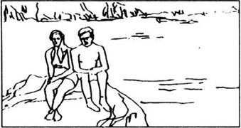
7月和8月，沃利斯和国王游历了地中海。他们在希腊会见了梅塔克萨斯首相，在土耳其会见了卡迈勒·阿塔蒂尔克，在保加利亚会见了博里什国王。但那个夏天最著名的事情莫过于爱德华的着装风波了。在从雅典前往伊斯坦布尔的旅途中，国王脱去衬衫做日光浴。天气很热，十分钟后他就睡着了。所以他没有注意到，一名年轻的摄影师正在给国王拍照……
爱德华从地中海回国后，有一封信正等着他。
信是伯明翰的阿尔伯特·汤普逊先生写来的，他写道：“今天早上，我在报上看到一张您的照片，我很生气。我从未看到一个国王穿得如此糟糕！居然没穿衬衫！没打领带，没穿鞋，没戴帽子……还穿着短裤！陛下，您怎么能这样？”
爱德华把信交给首相斯坦利·鲍德温看。“您觉得这封信怎么样？”国王问。
“汤普逊先生是对的，陛下，”首相回答，“您想赶时髦，可人民不喜欢这样。”
爱德华把信烧掉。“那么，鲍德温先生，您觉得离婚‘时髦’吗？”
首相坐了下来。“是的，陛下，”他开口说，“我读了关于这位辛普森夫人的事。她有两个丈夫，他们还活着。陛下，您必须明白这意味着什么。她不能嫁给一个国王。”
“但没有她我无法生活。”爱德华说。
“那么，陛下，”首相回答，“看得出一场风暴就要来了。我已经与您的家庭成员及朗大主教谈过，我们不会让这个女人做我们的王后。”
那天晚上，首相与国王谈了好几个小时。涉及的问题很多，但答案却只有一个。于是，第二天凌晨时分，爱德华说：
“您告诉我沃利斯不能嫁给国王。那么，我能做的只有一件事。我将把王位让给我的弟弟，然后离开英国。我必须依从自己的心。你告诉我与人相爱是罪恶。你告诉我幸福是错误的。这个国家多么奇怪啊！”
一小时后，爱德华打电话给沃利斯。“首相说，一场风暴就要来了，”爱德华说，“所以我想让你离开这儿。”
沃利斯收拾了行装，启程去法国．然后爱德华去见母亲。
这次会面伤感、奇特，而又充满火药味。“你知道自己在做什么吗？”王太后问，“向窗外看看吧。宫殿外有4亿人叫你国王。他们需要你。而你却要为了辛普森夫人抛弃这一切？”
“是的，母亲。我爱她。”
“爱？”玛丽王太后喊道，“你是国王！你首先要爱自己的国家！”
“但我首先是一个男人，”爱德华轻轻地说，“我无能为力。”
当天下午，国王给自己的一位密友温斯顿·邱吉尔打电话。
“我有坏消息要告诉你，”爱德华说，“昨晚，鲍德温先生来见我。我决定下周离开这儿。”
“您是说去度假吗，陛下？”
“不是，温斯顿，我要离开英国。永远也不再回来。乔治将成为国王。”
“但这样不行，陛下。你是一个自由人。你必须坚决同他们战斗。”
“不，”国王说，“我见过战争，那太可怕了。我不想再同谁打仗，”
“但是人民热爱你。而且他们希望沃利斯做王后。”
“也许是这样，”爱德华说，“但她不能当王后。我的敌人比我强大。我只是一名水手。风向一转，海水就会把我的船卷走。”
9 The Woman I Love
9
The Woman I Love
A few days later Mr Churchill came to sec Edward at Buckingham Palace. At first the King was quiet. Then he said: 'This is my last night in England, Winston. I love this country. I wanted to be a modern, kind King. I wanted to change the world, but they stopped me. And now I have to leave.'
It was ten o'clock. Edward stood up and walked over to the window. In the dark streets below there were hundreds of people. They were singing and calling his name: 'Edward, Edward, we Love Edward!' they shouted. 'Long live the King! Long live love!'
Suddenly the King turned to Mr Churchill. 'Why is this happening to me, Winston?' he cried. 'What have I done wrong?'
He sat down and put his head in his hands. There was a silence in the room, but through the open window came the shouting from the street. 'Long live Edward! Long live love! Long live Edward! Long live love!'
Mr Churchill came over and put his hand on the King's arm. Edward looked up. 'Thank you, Winston,' he said. 'You were a good friend to me.'
'Thank you, Sir. And you were a good King.'
At ten o'clock the next morning the telephone rang in Edward's bedroom.
'They're ready for you now, Sir,' a voice said.
The King walked slowly down the stairs. In front of him there was an open door. The family were waiting for him. His mother sat near the window, dressed in black. His brothers stood beside her. 'How close they are!' the King thought.
On a small table in the centre of the room there was a piece of paper. Edward sat down and read these words:
I, Edward the Eighth, King of Great Britain, King of India, King of Australia, King of New Zealand, King of Canada, King of Kenya, King of Nigeria, King of Burma, King of Malaya, King of Singapore, and King of thirty-two other countries, have today given the crown to my brother George.
God be with him and all his people.
10th December 1936.
Edward took a pen and wrote his name at the bottom of the page. Then he stood up and kissed his brother's hand.
'I never wanted this to happen,' George said. 'This is the worst day of my life.'
Edward walked over to his mother. 'Before I kiss you,' she said, 'there are some things that I want to say. I have never understood you, child. This morning you were a King. But tonight, you'll run from England like a thief. Alone. Angry. Afraid. You think that you're free. But you're not. You cannot be free.
'Everyone needs their family. Everyone needs their home. And tonight you have lost both those things.
'I love you. I am your mother and nothing can change that. But if you marry that woman, you will break my heart. Go now. It is all very sad.'
Edward kissed Queen Mary's hand. Then he turned and walked away.
The next day Edward returned to Windsor Castle. He went into a small, cold room at the top of the building. From there, he spoke on BBC radio to Britain and the world.
This is what he said:
Tonight, for the first time, I can say a few words to you. Earlier today I gave the crown to my brother George. He is now your King. I will soon leave this country and travel to France. My heart is with Wallis and I cannot live without the woman I love.
I don't know what will happen to me. Perhaps I will never see England again. But think of me tonight when I sail across the sea.
God be with you. Long live King George!
Edward left Windsor Castle and got into a large black car. It was now midnight and it was just beginning to rain.
'Take me away as quickly as you can,' he said. The car moved off into the darkness and the rain.
'What a night!' said the driver. 'I think the sky is crying, Sir.'
At 1.30 a.m. they arrived at Portsmouth. Edward got out of the car and a voice said: 'The King is here!'
Edward stopped and looked out across the open sea. There was a thin, cold smile on his face. 'King?' he said. 'No, I am not the King. I am just a man in love.'
Then he turned and walked onto the ship and into the night.
modern adj. 新式的，新派的。
stop v. prevent. 阻止，妨碍。
walk over 走过去，走过来。
long live love 爱情万岁。
come over （从远处）过来。
centre n. a middle part or point. 中心。
Kenya 肯尼亚。
Burma 缅甸。
Malaya 马来亚。
Singapore 新加坡。
bottom n. the lowest part. 底，底部。
thief n. a person who steals. 小偷。
break one's heart 使某人伤心。
return v. come on go back. 回来，归去。
top n. the highest part or point. 顶，上端，上部。
BBC 英国广播公司。
word n. a short speech or conversation. 话。
perhaps adv. possibly; maybe. 也许；可能。
across prep. from one side to the other side (of). 横过，从……的一边到另一边。
move off 离去，出发。
darkness n. the state of being dark. 黑暗。
open sea 公海，外海。
thin adj. 淡淡的。
9 我爱的女人
9 我爱的女人
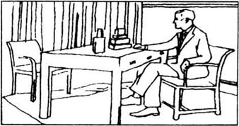
几天后，邱吉尔先生来白金汉宫拜访爱德华。开始，国王沉默不语。然后他说：“温斯顿，这是我在英国的最后一个晚上了。我爱这个国家。我想做一个跟得上时代的、仁慈的国王。我想改变这个世界，但他们阻止了我。现在，我不得不离开。”
10点了。爱德华站起身，走到窗前。夜幕中，下面街道上站了好几百人。他们唱着歌，叫着他的名字：“爱德华，爱德华，我们爱爱德华！”他们喊着，“国王万岁！爱情万岁！”
国王突然转向邱吉尔先生。“温斯顿，为什么这会发生在我身上？”他喊道，“我做错了什么？”
他坐下来，双手抱着头。屋里一片寂静，但街上的叫喊声从打开的窗户传进来。“爱德华万岁！爱情万岁！爱德华万岁！爱情万岁！”
邱吉尔先生走上前，把手放在国王的胳膊上。爱德华抬起头。“谢谢你，温斯顿，”他说，“你是我的好朋友。”
“谢谢您，陛下。您是位出色的国王。”
第二天上午10点，爱德华卧室里的电话响了。
“他们准备好了，正在等您，陛下。”一个声音说。
国王缓缓走下楼梯。在他面前，有一扇敞开的门。全家人都在等他。他的母亲坐在窗户旁，身穿黑衣。他的弟弟们站在她身旁。“他们之间是多么亲密呀！”国王想。
屋子中央有一张小桌子。上面放了一张纸。爱德华坐下来，读到下面的话：
我，爱德华八世，英国国王、印度国王、澳大利亚国王、新西兰国王、加拿大国王、肯尼亚国王、尼日利亚国王、缅甸国王、马来亚国王、新加坡国王，以及其他32个国家的国王，今天把王位交给我的弟弟乔治。
愿上帝与他同在，与他的臣民同在。
1936年12月10日。
爱德华取出一支笔，在这页纸的下部签了自己的名字。然后站起来，吻了吻弟弟的手。
“我从未期望过这种事发生，”乔治说，“这是我一生中最糟糕的一天。”
爱德华走到母亲身边。“在我吻你之前，”她说，“有些话我想说。孩子，我一直都不理解你。今天早晨你还是国王。但今晚，你就要像小偷一样逃离英国，孤零零一个人，愤愤不平，忐忑不安。你以为自己自由了，但你没有。你永远也不会自由。”
“每个人都需要自己的家庭。每个人都需要自己的家园。但今晚，这两样你都失去了。
“我爱你。我是你的母亲，这是什么都改变不了的。但如果你娶了那个女人，就会伤透我的心。现在走吧。这太让人伤心了。”
爱德华吻了王太后玛丽的手。然后他转身走了。
第二天，爱德华回到了温莎城堡。他走进城堡顶部一间狭小阴冷的房间。在那里，他通过BBC的广播向英国和全世界讲了话。
下面就是他所说的：
今晚，我第一次有机会向你们讲几句话。今天早些时候，我把王位让给了我的弟弟乔治。现在，他是你们的国王了。我不久将离开这个国家去法国。我的心和沃利斯在一起，没有我爱的女人，我无法生活。
我不知道我将来会怎么样。也许我再也看不到英国了。但是，今晚我跨越海峡时，请大家想着我。
愿上帝与你们同在。乔治国王万岁！
爱德华离开温莎城堡，坐进一辆黑色大轿车。时值午夜，天下起了雨。
“带我离开这儿，越快越好。”他说。汽车驶入黑夜和雨幕中。
“这是怎样的一个晚上啊！”司机说，“我想天空都在哭泣了，陛下。”
凌晨1点30分，他们到达朴茨茅斯。爱德华走下汽车，只听一个声音叫道：“国王来了！”
爱德华停下脚步，向大海那边望去。他的脸上挂着淡淡的、冷漠的微笑。“国王？”他说，“不，我不是国王。我只是一个恋爱中的男人。”
然后，他转身走上船，消失在夜色里。
10 The Wedding
10
The Wedding
The next morning Edward telephoned Wallis from Boulogne.
'Did you listen to me on the radio?' he asked.
'Yes, of course,' she said.
'And how did you feel?'
'I was sitting in my room alone,' Wallis said. 'And when I listened to your words, I felt so sad. I put my hands over my eyes and I just cried. I couldn't stop myself. You have left everything for me. But I love you so much, Edward, and with me, you'll be the happiest man in the world.'
'I am that already,' he replied. 'You are all that matters in my life.'
Edward married Wallis Simpson six months later, on 3rd June 1937. None of the Royal Family came to the wedding. Edward was forty-three. Wallis was forty-one. And they now took a new. name — the Duke and Duchess of Windsor.
A few weeks later Edward wrote to his brother King George. 'I was surprised that you didn't come to the wedding,' he wrote. 'But Wallis is now my wife and nothing can change that. As you know, we have a house in Paris. But France is not my home, and I want to live again at Windsor with Wallis by my side.'
'I'm sorry, Edward,' King George wrote back. 'But you know how I feel about that woman. I do not like her. I will never like her. You can live here, but Wallis cannot.'
'My brother', Edward said later, 'pushed me away like a dog. I will never forget what he did. And after that I decided that I didn't want my family. They didn't want Wallis, and so I didn't want them.'
wedding n. a marriage ceremony. 婚礼。
Boulogne 布伦（法国北部港市）
that 指“the happiest man in the world.”
matter v. be important. 有重要性。
by one's side 在……身边。
later adv. 后来。
want v. need. 需要。
10 婚礼
10 婚礼
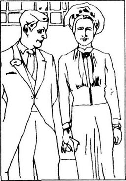
第二天早晨，爱德华从布伦打电话给沃利斯。
“你听到广播上我的讲话了吗？”他问。
“当然听了。”她说。
“你觉得怎么样？”
“当时我正一个人在自己房间里，”沃利斯说，“我听到你的讲话，觉得难过极了。我捂着眼睛哭了。我忍不住要哭。你为了我放弃了一切。爱德华，我是那么地爱你。和我在一起，你将成为世界上最幸福的男人。”
“现在我已经是了，”他答道，“你是我生命中的一切。”
6个月后，也就是1937年6月3日，爱德华和沃利斯·辛普森结了婚。皇室没有人出席婚礼。爱德华时年43岁。沃利斯41岁。他们现在有了一个新的称号——温莎公爵和夫人。
几个星期后，爱德华写信给他的弟弟乔治国王。“你没有出席婚礼，我觉得很惊讶。”他写道，“但现在，沃利斯是我的妻子了，什么也改变不了这一点。你知道，我们在巴黎有一所房子。但法国不是我的家，我想和沃利斯一起回温莎去住。”
“对不起，爱德华，”乔治国王回信说，“但你知道我对那个女人的看法。我不喜欢她。我永远不会对她有好感。你可以住在这儿，但沃利斯不行。”
爱德华后来说：“我的弟弟把我像狗一样推开了。我永远也不会忘记他的所做所为。从那以后，我确信我不需要我的家人了。他们不接受沃利斯，所以我也不接受他们。”
11 Paris
11
Paris
For the next thirty years the Duke and Duchess lived in Paris. They gave parties and travelled round the world, but they never went back to Buckingham Palace.
When King George died in 1952 and Queen Mary died in 1961, Edward returned to Windsor for a few days. But Wallis stayed in France. 'It's your family,' she said. 'Not mine.'
But then, in 1966, the Duke and Duchess met Queen Elizabeth (the daughter of King George) at a small party in London. After thirty long years it was time to forget the past. Elizabeth kissed the Duchess and touched her arm. Then she turned to the Duke and said: 'Wallis is so beautiful, uncle. I think you're a lucky man.'
'That day Elizabeth was very kind to us,' Edward wrote later. 'But why couldn't my mother or my brother say those words to me?'
On BBC television in 1969 the Duke and Duchess spoke about their life together.
'Do you argue?' someone asked them.
'No, not really,' the Duchess replied. 'But there's one thing about my husband that I really don't like. He is always late. It doesn't matter if he's meeting a queen, a president, or a film star. He can never arrive on time. I don't know why. I have tried to change him, but it's just not possible.'
The Duke smiled and touched her hand. 'I know that I'm often late,' he said. 'But on our wedding day, I arrived at the church twenty minutes before you. I was early and you were late.'
'Yes, that's true,' the Duchess said. And they both laughed.
'You could see real love in their eyes,' one newspaper wrote. 'They were on television, but they forgot about the cameras and the millions of people who were watching. They were just two people in love.'
The Duchess was famous for her jewellery. 'After my husband,' she once said, 'I love jewellery more than anything else in the world.' And after thirty-five years with the Duke she had hundreds of pieces, which came from all over the world.
'I have never met a more beautiful woman than Wallis,' Edward wrote, 'and I love giving her presents. She has given me so much happiness. I buy her jewels to say "thank you".'
In May 1972 the Duke became ill. When the doctor arrived, he listened to Edward's heart and then said: 'How many cigarettes do you have a day, Sir?'
'About forty or fifty,' the Duke replied. 'But please don't ask me to stop. I've smoked for sixty years and I cannot change now.'
That night Edward called Wallis into the room. 'I feel very tired,' he said. 'And I'm afraid. I love you. I have been very happy with you, and you have been a wonderful wife. When I die, I want you to take my body back to Windsor. Will you do that for me?'
'Yes, of course,' she said. And they both began to cry.
The Duke of Windsor died one hour later with Wallis by his side.
Three days later. a blue aeroplane arrived in Paris. Wallis went back to England with the Duke's body and, for the first time in her life, she entered Buckingham Palace.
A week later the Duchess returned to France, and for the next fourteen years she lived alone in Paris. The big house was dark. The doors were locked and she did not go out.
In the afternoons she sat in the dining room with Edward's love letters. 'They were so beautiful,' she said. 'I read them again and again.'
But then, in 1986, Wallis became ill. She went to a small hospital near the house, and a few days later she died. 'Without Edward,' she once wrote, 'my life was empty.'
She was buried in England next to her husband at Windsor. 'It's a strange thing,' one newspaper wrote. 'When they were alive, the Duke and Duchess could never live in Britain. It was only in death that they could be there together.'
give a party 举行聚会。
daughter n. one's female child. 女儿。
past n. what happened in time before the present. 往事。
touch v. press with slight force. 轻摸，碰。
lucky adj. having good luck. 有好运的。
argue v. disagree with words, fight with words. 争吵。
president n. head of the government in many modern states that do not have a king or queen. 总统。
real adj. true. 真正的。
camera n. an apparatus for taking moving pictures. 摄影机。
famous adj. very well known. 著名的，驰名的。
piece n. a single thing. （一）件。
all over everywhere. 到处，处处。
present n. a gift. 礼物。
cigarette n. 香烟。
tired adj. 累的，疲倦的。
aeroplane n. 飞机
body n. 尸体。
love letter 情书。
empty adj. without purpose, meaning. 空虚的，无意义的。
bury v. place in a grave. 埋葬。
11 巴黎
11 巴黎
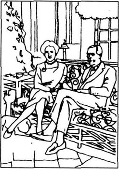
在以后的30年里，公爵和夫人住在巴黎。他们举行各种聚会，周游世界，但从未回过白金汉宫。
爱德华分别在1952年乔治国王去世时，以及1961年王太后玛丽去世时，回温莎待过几天。沃利斯则留在法国。“那是你的家庭，”她说，“不是我的。”
但是，1966年公爵和夫人在伦敦的一个小型聚会上见到了伊丽莎白女王（乔治国王的女儿）。事隔30年，该忘记过去了。伊丽莎白吻了公爵夫人，碰了碰她的胳膊。然后她转向公爵，说：“沃利斯真美，伯父。我觉得您真幸运。”
“那天，伊丽莎白对我们很和气，”爱德华后来写道，“但为什么我的母亲和弟弟就不能对我说这些话呢？”
1969年，在BBC电视节目里，公爵和夫人谈起他们的婚姻生活。
“你们吵架吗？”有人这样问他们。
“不，不真吵，”公爵夫人回答，“但我丈夫有一点我确实不喜欢。他总是迟到。无论是要会见女王、总统，还是电影明星，他从不准时赴约。我不知道为什么。我曾试图改变他，但就是不行。”
公爵微笑着拍拍她的手。“我知道自己常常迟到，”他说，“可我们举行婚礼那天，我比你早20分钟赶到教堂。我早到了，而你却迟到了。”
“对，这倒是真的。”公爵夫人说，他俩都笑了。
“在他们的眼中，你可以看到真正的爱，”一家报纸如此写道，“他们在接受电视采访，但他们忘记了摄像机，忘记了几百万观众在注视着他们。他们只是两个相爱中的人。”
公爵夫人因她的珠宝而出名。“除了我丈夫，”她有一次说，“这世界上我最爱的莫过于珠宝了。”与公爵一起生活35年后，她拥有了来自世界各地的几百件珠宝。
“我从未见过比沃利斯更美的女人，”爱德华写道，“我喜欢送礼物给她。她给了我那么多快乐。我给她买珠宝，以表达谢意。”
1972年5月，公爵病倒了、医生赶来后，听了听爱德华的心脏，问道：“您一天吸几支烟，先生？”
“大约四五十支，”公爵回答，“但请别让我戒烟。我已经吸了60年烟，现在已经改不了了。”
那天晚上，爱德华把沃利斯叫进房间。“我觉得很累，”他说，“也很害怕。我爱你，和你在一起我很快乐，你是个出色的妻子。我死后，你要把我的遗体送回温莎。你会为我做这件事吗？”
“会，当然会。”她说。然后两个人都哭了。
1小时后，温莎公爵溘然长逝，沃利斯一直陪伴在他身旁。
3天后，一架蓝色飞机到达巴黎。沃利斯护送公爵的遗体回到了英国，这是她平生第一次踏进白金汉宫。
1周后，公爵夫人回到法国。在这以后的14年里，她独自一人住在巴黎，把自己锁在那所幽暗的大房子里，足不出户。
每天下午，她就坐在餐厅里，读爱德华写的情书。“它们是那么美，”她说，“我读了一遍又一遍。”
然而，1986年，沃利斯病倒了。她住进离家不远的一家小医院，几天后便去世了。“没有爱德华，”她曾写到，“我的生活一片空虚。”
她被葬在英国温莎她丈夫的墓旁。“这真是件奇怪的事，”一家报纸写道，“公爵和夫人活着的时候不能住在英国。只有死后，他们才得以一起住在那儿。”
12 Long Live Love!
12
Long Live Love!
In 1970, two years before his death, Edward said:
There are some people who think that I was wrong to give away my crown. But they don't understand true love.
When I was young, I lived in Buckingham Palace. I could have anything that I wanted. But I wasn't happy because my heart was empty.
Then I met Wallis and everything changed. For half of my life I have lived here with the most beautiful woman in the world. And she is everything to me.
When I sit in my garden with the Duchess by my side, I sometimes think about my early life. I remember the days alone in my bedroom. I remember the teacher who hit me with a stick. I remember the war and my travels around the world. And then I remember the crowds of people below my window, who shouted: 'Long live love!'
On my last night in London I spoke with Winston Churchill. In the middle of our conversation he said: 'I think, Sir, that the best things in life are free.' I have never forgotten those words. And now, many years later, I understand what they mean. You cannot buy happiness. And you cannot buy love.
To be happy deep inside your heart is the most wonderful thing in the world. I have been a lucky man. And so I say:
'Thank God for Wallis, and LONG LIVE LOVE!'
give away 失掉，丧失。
remember v. call back into the mind. 记起，忆及。
conversation n. a talk. 谈话，交谈。
free a. without payment of any kind. 免费的。
deep adv. far down or in. 深地。
inside prep. within. 在内。
thank sb. for sb. (or sth.) 因……而感谢……
12 爱情万岁！
12 爱情万岁！
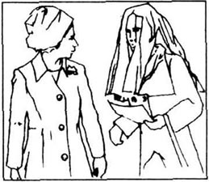
1970年，即爱德华去世前两年，他曾说过：
有些人认为我放弃王位是错误的。但他们不懂得真正的爱情。
我年轻的时候住在白金汉宫。我想要的东西都能得到。但我并不快乐，因为我的内心是空虚的。
后来我遇到了沃利斯，一切都变了。我的后半生都和这位世界上最美丽的女人在这里一起度过。她就是我的一切。
我和公爵夫人一起坐在花园里时，有时会想起自己早年的生活。我想起自己孤零零待在卧室里的那些日子。我想起那个用棍子打我的老师。我想起战争和周游世界的旅行。我想起那些聚集在我窗下的人群，他们高呼着：“爱情万岁！”
我离开伦敦前的最后一个晚上和温斯顿·邱吉尔做过一次长谈。谈话中，他说：“陛下，我认为生活中最好的事情是无偿的。”我从未忘记这句话。现在，许多年之后，我才理解了它的涵义。幸福是买不到的。爱情也是买不到的。
内心深处的幸福是世界上最美妙的。我是一个幸运的人。所以，我要说：
“感谢上帝给了我沃利斯，爱情万岁！”
Exercises
Exercises
A Checking your understanding
Chapters 1 and 2 Are these sentences true (T) or false (F)?
1 Edward was born in 1894.
2 He was a very happy child.
3 He was afraid of his father.
4 He went to school with other children.
5 Edward became Prince of Wales in 1912.
Chapters 3 and 4 Write answers to these questions.
1 What did Edward do during the First World War?
2 How was Edward different from other princes?
3 Why was Wallis disappointed when Edward began to talk to her?
4 Why did most people lie to the Prince of Wales?
Chapters 5 and 6 Find answers to these questions.
1 Where was Wallis born?
2 Who locked her in a bathroom?
3 How many brothers did Edward have?
4 Why was Wallis afraid when Edward became King?
Chapters 7 and 8 Who said these words in the story?
1 'I am in love with the King and I want a divorce.'
2 'If you need me, I'll always be here.'
3 'Divorce is wrong in the eyes of God.'
4 'I have God on my side, and that is all I need.'
5 'You want to be modern, but the people don't like it.'
6 'You must love your country first.'
Chapters 9 and 10 Who in the story...
1 ... came to see Edward on his last night as King?
2 ... spoke on BBC radio from Windsor Castle?
3 ... became King after Edward?
4 ... cried when she heard Edward's voice on the radio?
Chapters 11 and 12 Find answers to these questions.
1 Where did the Duke and Duchess live after they got married?
2 Who was late at their wedding?
3 How long did the Duchess live after Edward died?
4 What did Edward call 'the most wonderful thing in the world'?
B Working with language
1 Complete these sentences with information from the story.
1 In April 1987, three hundred people....
2 Mrs Namiki bought a gold ring because....
3 Prince Edward lived in the most beautiful house in England but....
4 After a year at Oxford University, Prince Edward went ....
5 On the journey from Athens to Istanbul....
6 Mr Albert Thompson was angry because....
7 When Queen Elizabeth Ⅱ met Wallis in 1966, ....
8 After Edward died, Wallis....
2 Put these sentences in the right order. Check your order with chapter 5.
In 1933 Wallis and her aunt went skiing in Austria with Edward.
One night Winfield hit her and locked her in the bathroom.
And then she married Ernest Simpson.
A few months later Edward asked Wallis to marry him.
Wallis was born in Baltimore.
So she divorced him.
She married Winfield Spencer when she was twenty.
C Activities
1 Write a letter to the author of the book and say what you like and what you don't like about it.
2 'The best things in life are free.' Do you agree? Write a short essay and say why you agree or don't agree.
3 How much do you know about the British Royal Family? Work with a partner and ask and answer questions about Queen Elizabeth Ⅱ, Prince Charles, and Princess Diana.
封底